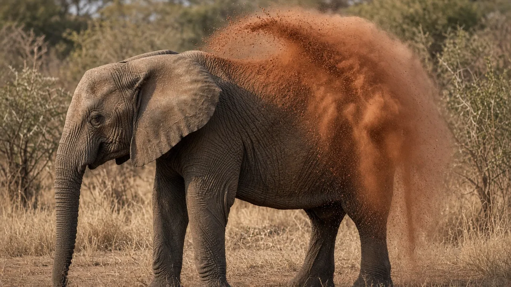

Why is elephant skin so wrinkly?
Elephant skin looks wrinkly because it is covered in a network of tiny cracks. A 2018 study of African elephant skin found that these channels form when a thickening, brittle outer layer fractures, and they help the animal hold water and mud on its body.

What the wrinkles really are
The elephant's skin carries an intricate network of crevices, according to a 2018 paper in Nature Communications by Martins and colleagues on African bush elephants. The channels are micrometres wide. The authors write that they improve thermal regulation through water retention and protect against parasites and strong sun by helping mud stick.
How the cracks form
Using microscopy, computed tomography and a physics based model, the team showed that the channels are fractures of the elephant's brittle outermost skin layer, which does not shed as easily as human skin. They suggest the layer thickens over time until local bending stress in the troughs between small skin bumps makes it crack.
So the wrinkles are not folds from loose skin. They are better thought of as a pattern of tiny breaks that the skin generates itself.
Why water and mud matter
The Smithsonian's National Zoo says elephants protect their skin from the sun and insects by regularly covering themselves with dirt, sand and mud. The fine channels in the skin help that coating stay on. You can see the behavior in our article on why elephants throw mud and dust on themselves.
Thick but sensitive
The National Zoo notes that elephant skin varies from paper thin inside the ears to about 1 inch (2.54 centimeters) thick around the back, and that it is sensitive because it has a rich nerve supply. San Diego Zoo describes elephants as having loose, wrinkly skin.
What we still do not know
The 2018 study looked at African elephant skin. We did not find the same detailed work for Asian elephants in the sources we checked, so we do not claim their wrinkles form in exactly the same way.
Frequently asked questions
Why do elephants have wrinkles?
Tiny cracks in the skin form a network of channels that hold water and mud, helping with cooling and protection from sun and parasites.
Are elephant wrinkles the same as human wrinkles?
No. In African elephants they are fractures in a brittle outer layer, not folds from loose skin.
How thick is elephant skin?
The National Zoo says it ranges from paper thin inside the ears to about 1 inch (2.54 centimeters) thick around the back.
Is elephant skin sensitive?
Yes. Despite its thickness the skin has a rich nerve supply.
Sources
- Martins, A. F., Bennett, N. C., Clavel, S., et al. (2018). Locally-curved geometry generates bending cracks in the African elephant skin. Nature Communications 9: 3865. doi:10.1038/s41467-018-06257-3
- Smithsonian's National Zoo and Conservation Biology Institute: Asian elephant
- San Diego Zoo Wildlife Alliance: Elephant
Cite this page
APA
TuskWise. (2026, November 11). Why is elephant skin so wrinkly? https://tuskwise.com/blog/why-is-elephant-skin-so-wrinkly.html
MLA
“Why is elephant skin so wrinkly?” TuskWise, 11 Nov. 2026, tuskwise.com/blog/why-is-elephant-skin-so-wrinkly.html.
Chicago
TuskWise. “Why is elephant skin so wrinkly?” TuskWise. Last modified November 11, 2026. https://tuskwise.com/blog/why-is-elephant-skin-so-wrinkly.html.